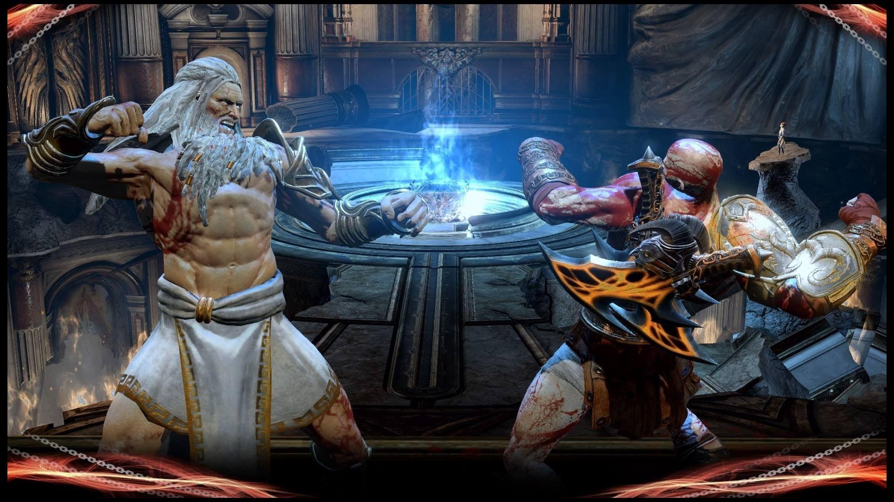

Visión general de la franquicia
Mas adelante se explicará una pequeña parte de toda la historia y los personajes de la franquicia
God of War es la saga de videojuegos donde Kratos, su protagonista, se enfrenta a dioses y criaturas mitológicas de la mitología griega para cumplir con su venganza y nórdica por redención, viendo claramente su evolución como personaje a lo largo de cada juego.
Desarrollada por Santa Monica Studio, esta saga ha sido unas de las mas iconicas de todo internet, siendo por su asombrosa narrativa o por su combate expectacular
